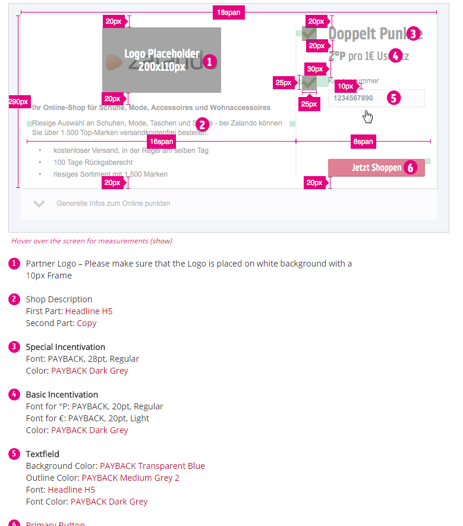
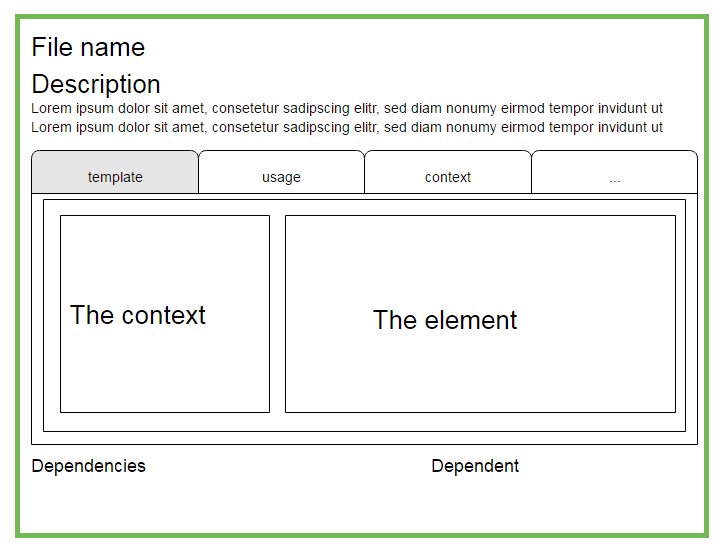
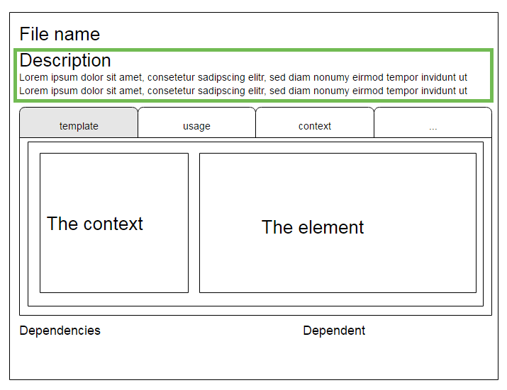
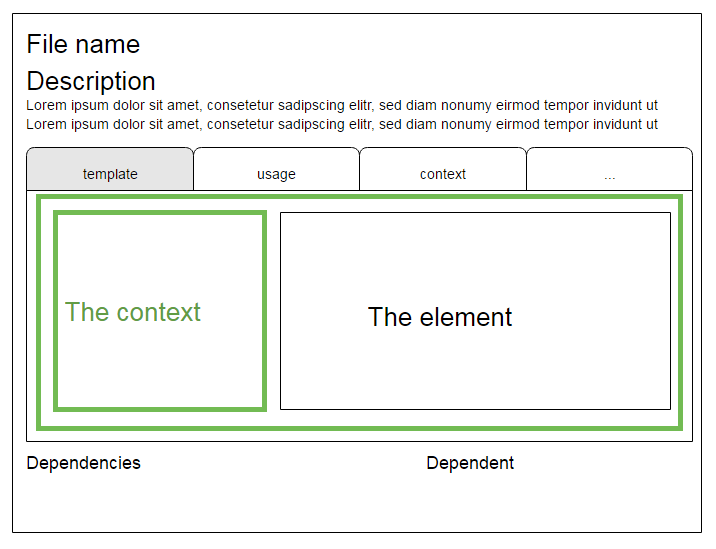

Munich css
16-11-24
Livin Styleguide / Pattern lib
¯\_(ツ)_/¯
Who I am?
Back in the days...
... jan 2014
So what's the problem?
Do you know something like this?

We wanted...
... atomic design
styles, elements, components, modules, templates, screens
Why not using existing solutions?
Pattern Lab / SourceJs / KSS
Technology
Time to show how it's working
convention over configuration...
folder and files
Details
(*_detail.jade)

Descriptions
(*_description.jade)

Context
(*_context.jade)

Usages
(*_usage.jade)
How are patterns maintained/aligned/added?
Do you really need a style guide/pattern library?
What's next
Thx...
q and a ...